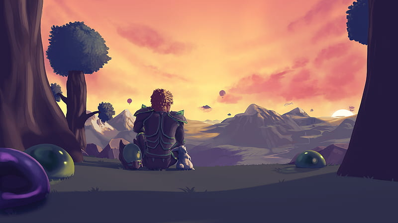
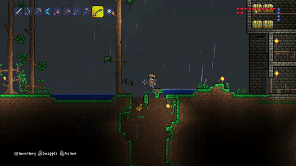

Terraria
Terraria é um jogo de aventura e sandbox desenvolvido pela Re-Logic. Foi lançado inicialmente em 2011 e está disponível para várias plataformas, incluindo PC, consoles e dispositivos móveis.
No game, os jogadores são colocados em um mundo gerado aleatoriamente, onde têm a liberdade de explorar, construir estruturas, coletar recursos, combater inimigos e descobrir tesouros. O jogo combina elementos de exploração, construção, mineração e combate, oferecendo uma ampla gama de atividades e possibilidades.

Desenvolvimento

Terraria foi lançado oficialmente em 16 de maio de 2011 pela desenvolvedora independente Re-Logic, criada por Andrew "Redigit" Spinks. O jogo surgiu como um projeto de paixão, inspirado por outros títulos de sandbox e construção como Minecraft, mas trouxe seu próprio estilo ao combinar elementos de ação, aventura, RPG e exploração em um ambiente 2D.
Jogabilidade
O mundo de Terraria é gerado de forma procedural, o que significa que cada mundo é único em termos de geografia, biomas, e distribuição de recursos. Os jogadores começam com ferramentas básicas e devem explorar as profundezas da terra, cavando e coletando materiais como minérios, madeira e pedras. Esses recursos são essenciais para criar equipamentos, construir abrigos e progredir no jogo. A exploração é incentivada por biomas variados, como florestas, desertos, cavernas, e oceanos, cada um com seus próprios recursos e inimigos.
A construção é uma parte central de Terraria. Os jogadores podem construir casas, fortalezas ou qualquer estrutura que possam imaginar usando os materiais coletados. Essas construções não são apenas estéticas; elas também servem como abrigos para os NPCs (personagens não jogáveis) que os jogadores podem atrair e que oferecem serviços úteis, como venda de itens e cura. Além disso, o jogo possui um sistema de crafting robusto, onde os jogadores podem criar armas, armaduras, ferramentas, e itens de consumo combinando materiais em diferentes estações de trabalho.
Terraria também suporta o modo multijogador, onde os jogadores podem se unir a amigos para explorar, construir e lutar juntos. O multiplayer adiciona uma camada extra de estratégia e diversão, permitindo que grupos de jogadores se especializem em diferentes papéis, como combatentes, construtores, ou exploradores.


 Viagem Rápida
Viagem Rápida